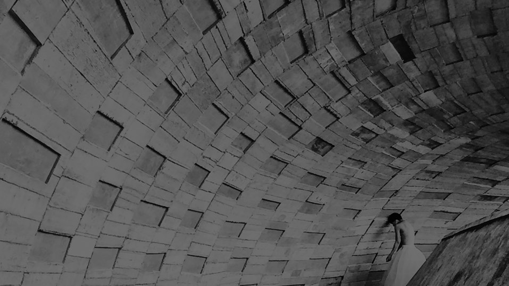

We believe focus and sincerity" define beauty, while stunning beauty is bigoted focus with a human touch,
coupled with the test of time, to create the value of "creation".
Taiwanese choreographer Tsai Po-Cheng endeavors to interpret Taiwanese native works in foreign countries through body aesthetics taken to extremes and a blend of oriental fantasy.
Dance is the source of Po-Cheng's passion for life. He believes that dance is a taste worth savoring,
every moment in life is a moving experience, through which multi-directional insights can be gained,
leading to the delicate mood flow experience and brewed extraordinary works.